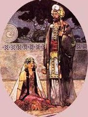
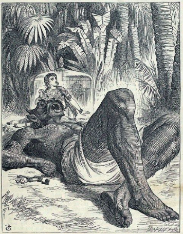

Shahryar as the all powerful Sultan
Shahryar is introduced in Arabian Nights as the sultan, with total authority over his subjects and everything falling within his kingdom. After his trust in womankind is destroyed by a cheating sultaness and an encounter with another adultering woman, Shahryar exercises the extent of his power.
"Mean while Shahryar commanded his Wazir to bring him the bride of the night that he might go in to her; so he produced a most beautiful girl, the daughter of one of the Emirs and the King went in unto her at eventide and when morning dawned he bade his Minister strike off her head; and the Wazir did accordingly for fear of the Sultan" (Burton)
The Shahryar who is the audience to Scheherazade's stories is misogynistic, aggressive, and ruthless; not the characteristics that one would want in an all powerful Sultan:
In being set against all of womankind, Shahryar displays the reign of terror that leave his subjects quaking and helpless against his rule. This sets the stage for Scheherazade's stories, and for her to take him on as her pupil in leading him to regaining his sense of honor and just ways. His place in society is interesting, in that if such events of adultery had happened to any other man, they would be in no place to exact this widespread revenge. The Sultan's role of power allows him the right to terrorize his people, and thus is the only person who can bring out through necessity Scheherazade's storytelling.
Let's explore the changing nature of Shahryar The Murderer
The Sultaness from Galland's English translation
A secret gate of the sultan's palace suddenly opened, and there came out of it twenty women, in the midst of whom walked the sultaness, who was easily distinguished from the rest by her majestic air. This princess thinking that the king of Tartary was gone a-hunting with his brother the sultan, came with her retinue near the windows of his apartment. For the prince had so placed himself that he could see all that passed in the garden without being perceived himself. He observed, that the persons who accompanied the sultaness threw off their veils and long robes, that they might be more at their ease, but he was greatly surprised to find that ten of them were black men, and that each of these took his mistress. The sultaness, on her part, was not long without her gallant. She clapped her hands, and called "Masoud, Masoud," and immediately a black descended from a tree, and ran towards her with great speed.
Modesty will not allow, nor is it it necessary, to relate what passed between the blacks and the ladies. It is sufficient to say, that Shaw-zummaun saw enough to convince him, that his brother was as much to be pitied as himself. This amorous company continued together till midnight, and having bathed together in a great piece of water, which was one of the chief ornaments of the garden, they dressed themselves, and re-entered the palace by the secret door, all except Masoud, who climbed up his tree, and got over the garden wall as he had come in.
The Lady and the Jinni from Galland's English translation
They travelled as long as day-light continued; and lay the first night under trees. They arose about break of day, went on till they came to a fine meadow on the seashore, that was be-sprinkled with large trees They sat down under one of them to rest and refresh themselves, and the chief subject of their conversation was the infidelity or their wives. They had not rested long, before they heard a frightful noise from the sea, and a terrible cry, which filled them with fear. The sea then opened, and there arose something like a great black column, which reached almost to the clouds. This redoubled their terror, made them rise with haste, and climb up into a tree m bide themselves. They had scarcely got up, when looking to the place from whence the noise proceeded, and where the sea had opened, they observed that the black column advanced, winding about towards the: shore, cleaving the water before it. They could not at first think what this could mean, but in a little time they found that it was one of those malignant genies that are mortal enemies to mankind, and are always doing them mischief. He was black and frightful, had the shape of a giant, of a prodigious stature, and carried on his head a large glass box, fastened with four locks of fine steel. He entered the meadow with his burden, which he laid down just at the foot of the tree where the two princes were concealed, who gave themselves over as lost. The genie sat down by his box, and opening it with four keys that he had at his girdle, there came out a lady magnificently appareled, of a majestic stature, and perfect beauty. The monster made her sit down by him, and eyeing her with an amorous look, said, "Lady, nay, most accomplished of all ladies who are admired for their beauty, my charming mistress, whom I carried off on your wedding-day, and have loved so constantly ever since, let me sleep a few moments by you; for I found myself so very drowsy that I came to this place to take a little rest." Having spoken thus, he laid down his huge head upon the lady's knees, and stretching out his legs, which reached as far as the sea, he fell asleep presently, and snored so loud that he made the shores echo.
The lady happening at this time to look up, saw the two princes in the tree, and made a sign to them with her hand to come down without making any noise. Their fear was extreme when they found themselves discovered, and they prayed the lady, by other signs, to excuse them. But she, after having laid the monster's head softly on the ground, rose up and spoke to them, with a low but eager voice, to come down to her; she would take no denial. They informed her by signs that they were afraid of the genie, and would fain have been excused. Upon which she ordered them to come down, and threatened if they did not make haste, to awaken the genie, and cause him to put them to death.
These words so much intimidated the princes, that they began to descend with all possible precaution lest they should awake the genie. When they had come down, the lady took them by the hand, and going a little farther with them under the trees, made them a very urgent proposal. At first they rejected it, but she obliged them to comply by her threats. Having obtained what she desired, she perceived that each of them had a ring on his finger, which she demanded. As soon as she had received them, she pulled out a string of other rings, which she shewed the princes, and asked them if they knew what those jewels meant? "No," said they, "we hope you will be pleased to inform us." "These are," she replied, "the rings of all the men to whom I have granted my favours. There are fourscore and eighteen, which I keep as memorials of them; and I asked for yours to make up the hundred. So that I have had a hundred gallants already, notwithstanding the vigilance of this wicked genie, who never leaves me. He may lock me up in this glass box and hide me in the bottom of the sea; but I find methods to elude his vigilance. You may see by this, that when a woman has formed a project, there is no husband or lover that can prevent her from putting it in execution. Men had better not put their wives under such restraint, as it only serves to teach them cunning." Having spoken thus to them, she put their rings on the same string with the rest, and sitting down by the monster, as before, laid his head again upon her lap, end made a sign to the princes to depart.